Electrical FireDesignPrimitive Graph FormatData Layer |
|
The data graph nodes and edges belong to one of the kinds below. The next page describes the individual primitives in detail, followed by a list of mappings from Java bytecodes to primitive graphs.
|
|
An int edge carries a 32-bit integer value from the place it's computed to its uses. On the 680x0 int edges are usually assigned to data registers. |
|
|
A long edge carries a 64-bit integer value. |
|
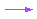 |
An address edge carries a pointer or object reference value. This is usually a 32-bit value, although on some 64-bit machines this could be a 64-bit value. On the 680x0 address edges are usually assigned to address registers. |
|
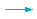 |
A single float edge carries a single-precision (32-bit) floating point value. On machines with separate floating-point registers we usually assign single float edges to floating-point registers. |
|
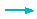 |
A double float edge carries a double-precision (64-bit) floating point value. On machines with separate floating-point registers we usually assign double float edges to floating-point registers. |
|
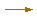 |
A condition edge carries
the result of a compare primitive to a condition primitive or an if node. The compare primitive outputs one
of the four states less, equal, greater,
or unordered along the condition edge to the condition primitive,
which can take different actions depending on which state it receives. Condition
edges are never passed as arguments to or results of function calls.
|
|
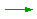 |
A memory edge is an abstraction for the state of memory, other threads, and input/output devices -- all mutable data other than what is held in this function's local variables. Primitives that read this data must have a memory edge as one of their inputs, and primitives that modify this data must also output a memory edge. |
| 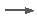 | A tuple edge represents a combination of several other data edges. We use tuple edges to carry the outputs of primitives that would otherwise produce more than one data edge. Projection nodes extract the component edges of a tuple edge. |
A data graph node is either a phi-node or a primitive. The numerous kinds of primitives are outlined below and described in detail on the next page.
Caution: The primitive summary below corresponds to an older specification of primitive graphs. See the next page for the correct details.
|
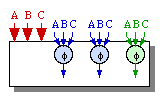 |
Phi nodes are special primitives that denote places in the graph where several different definitions of a live local variable can reach a control node. Each phi node must have as many inputs as there are control graph predecessors of the control node containing the phi node. The inputs to a phi node are paired with these control graph predecessors. If control came to this control node from node A, then the phi node selects its own input A; if control came from node B, then the phi node selects its own input B, etc. Usually (but not always) the input variables of a phi node are dead after the phi node and have disjoint live ranges. We can often avoid generating any code for the phi node by assigning all of its inputs and its output to the same register. |
|
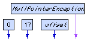 |
Nullary primitives produce
constant values without any side effects. Examples include int, long, and
floating-point constants, pointer constants such as a reference to a static
instance of the The rule is that any primitive that does not depend on the function's local variables, has no side effects, and always produces the same value within a specific invocation of the function is a nullary primitive. |
|
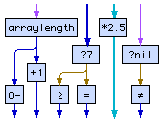 |
Unary primitives produce a value
that depends only on their one argument without producing any side effects
unless their output edges include a memory edge. When invoked more than
once on the same argument, a unary primitive produces the same results.
Examples of unary primitives include adding a constant to a number, subtracting
a number from a constant, comparing a long to the constant 7 (?7
in the figure on the left), comparing an address to nil (?nil),
testing a condition (such as =, which generates 1 if a condition
was equal and 0 otherwise), and getting the length of an array.
The last one is a unary primitive because the length of an array never changes.
|
|
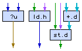 |
Like unary primitives, binary primitives,
ternary primitives, and primitives that take more arguments
produce values that depend only on their arguments without producing any
side effects unless their output edges include a memory edge. When invoked
more than once on the same set of arguments, a primitive produces the same
results. Examples of binary primitives include adding two numbers and comparing
one number to another ( Loading a non-volatile field of an object is also a binary primitive. Note that since a load takes the memory state as one of its arguments (and because of Java's semantics permitting reordering of non-volatile memory accesses as seen by other threads), a non-volatile load satisfies the property that invoking it more than once always yields the same value; any operation that might modify the field produces a different memory state so the memory argument to a subsequent load of the field will be different, thus allowing the subsequent load to return a different value. Storing a field of an objet is a ternary primitive that takes a memory state, an object reference, and a value and produces a new memory state. |
|
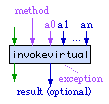 |
A virtual call primitive invokes a method passed as an input to the primitive on a set of arguments also passed as inputs. The method should have been obtained from a lookupvirtual primitive. Argument a0 is the object on which the method is called. Any non-inlined function is assumed to be capable of side effects, so the memory state is both an incoming and outgoing edge connected to the virtual call. Any non-inlined function is also assumed to be capable of throwing exceptions (at the very least, any non-inlined function can throw asynchronous exceptions), so the virtual call primitive must be connected to an exception node (this implies that the virtual call's results may not be used by any other primitive in the same control node). The result appears only if the method produces a result and the result is actually used in this function. |
|
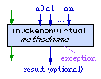 |
A static call calls a function fixed in the primitive rather than determined at runtime. The inputs are the current memory state and the arguments of the call. The outputs are the revised memory state, the result (only if the method produces a result and the result is actually used in this function), and an exception. The static call must be connected to an exception node. |
|
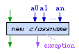 |
There are other primitives such as the new operator that creates new objects. For most practical purposes these behave like static calls to predefined system services. |
***** There are a zillion constraints on the placement of data flow edges and primitives within control nodes. Many of these are common sense (such as it's not good to get into situations where there are two live copies of a memory state at the same time, and we better not have any cycles of data flow edges not broken by phi-nodes), but sometime soon we'll need to write down the rules (which may not be obvious) that ensure these constraints.